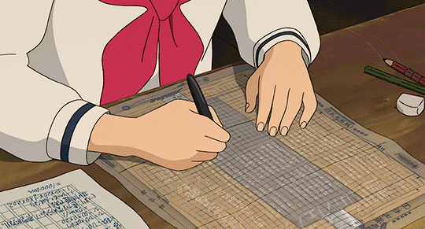
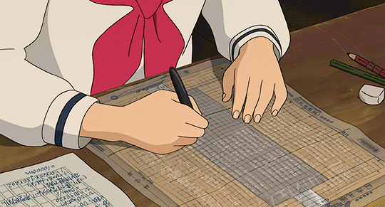

"The Handmade Web"
this article brought to mind the current fear of many traditional artists, the loss of handmade art.
a discussion particularly present in the context of AI generated art,
i particularly agree with Carpenter in the significance of retaliating against the highly commercialized web with "the handmade web"
i like that the handmade web includes continuous interaction with its form and code.
"My Website is a Shifting House"
i love how Schulst articulates the potential of a website, and the clarification of its form:
"a website creator becomes both author and architect simultaneously. there are endless possibilities as to what a website could be."
i also loved how she discussed the different potential functions of a website (room, shelf, plant, garden, puddle, rock).
there's so much creative freedom in making and maintaining a website!
"A Rant About Technology"
i like this quote, "technology is the active human interface with the material world."
it is true that many useful and valuable technologies are overlooked due to their apparent simplicity or primitive nature.
the wheel was not particularly extravagant in presentation, but was a monumental achievement for humanity.
technology doesn't always come in the form of computers and code.
 
